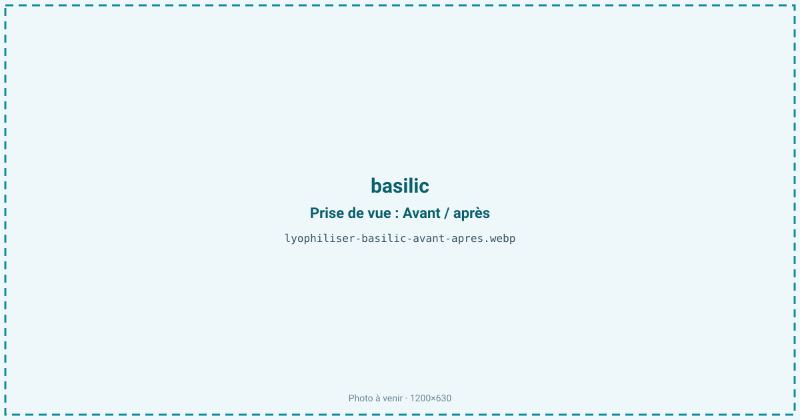
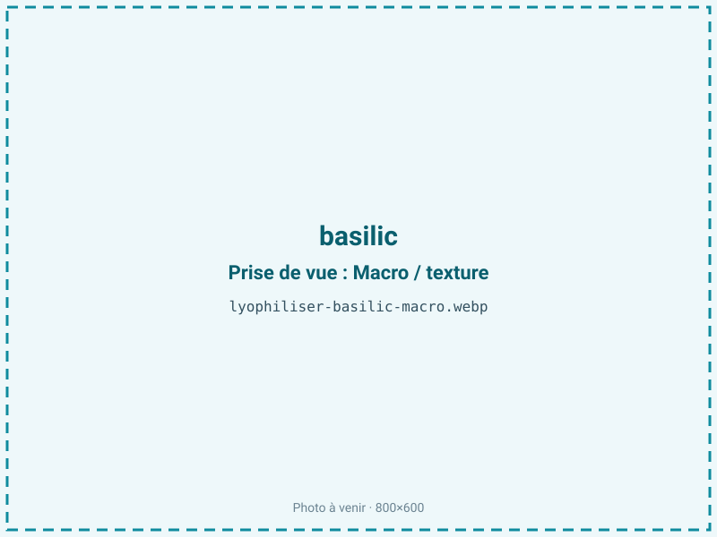
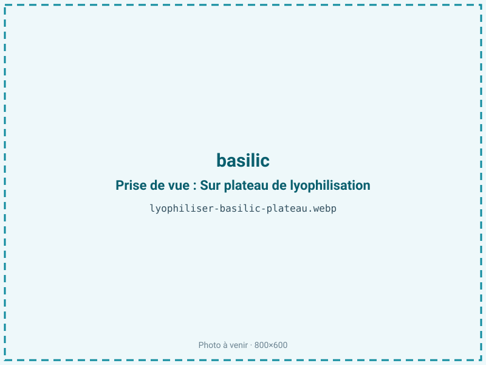
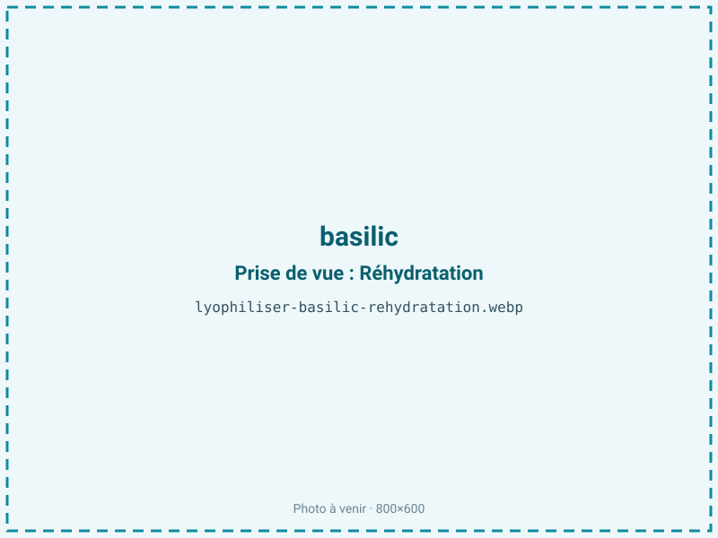

Lyophiliser du basilic
Le basilic frais noircit en un jour et perd tout son parfum au séchage à l'air. La lyophilisation retire l'eau à froid en gardant la feuille verte et ses huiles essentielles volatiles, celles qui font l'arôme. On obtient une herbe premium, une poudre pour sauces ou un décor culinaire, stable des mois sans perdre le goût du basilic frais.

En bref
Comment basilic se comporte à la lyophilisation
La feuille de basilic contient environ 90 % d'eau dans un tissu foliaire mince et tendre, et concentre ses huiles essentielles dans de minuscules glandes (trichomes) à la surface : linalol, eugénol et méthylchavicol (estragole) portent l'arôme typique. La chlorophylle donne le vert, et des enzymes d'oxydation rendent la feuille prompte à noircir dès qu'elle est meurtrie ou coupée.
À la congélation, l'eau abondante cristallise dans les cellules foliaires ; comme l'épaisseur est très faible, la sublimation est rapide, d'où un cycle court de 16 à 24 heures, l'un des plus brefs des matières traitées. Le point critique est la volatilité des huiles essentielles : logées en surface, elles s'évaporent si le procédé traîne ou si la température monte. Manipulée trop brutalement à l'état frais, la feuille noircit avant même le traitement, car les enzymes oxydent les composés phénoliques. Le froid et la rapidité du cycle préservent à la fois la couleur verte et le bouquet aromatique, là où la chaleur les détruit.
Paramètres de cycle
Traiter le basilic très frais, feuilles entières ou juste équeutées, sans les meurtrir pour éviter le noircissement enzymatique. Étaler en une seule couche, sans tassement, car la feuille est fine : l'épaisseur utile étant faible, le séchage est rapide. Congeler à −30 °C. En sublimation, garder un cycle court et une clayette modérée : plus le passage est bref, moins les huiles essentielles volatiles ont le temps de s'échapper.
La cible est aw 0,20 à 0,30. Le basilic étant maigre (moins de 2 % de lipides), il n'y a aucune fraction grasse à protéger : descendre l'activité de l'eau est ici favorable à la stabilité et à la conservation, sans le risque de rancissement des produits gras. Le critère d'arrêt vise cette aw basse et une feuille parfaitement sèche et cassante, qui s'émiette entre les doigts.
Pièges connus
- Arômes volatils : cycle court, conditionnement immédiat.
- Feuille fragile après séchage.



Variantes & provenance
La variété change le profil aromatique et la couleur. Le basilic génovois, doux et sucré, diffère du basilic thaï, plus anisé et réglissé, ou du basilic pourpre, dont l'anthocyane vire au violet foncé au lieu du vert. Un basilic grand vert donne une belle feuille pour le décor. La saison et le mode de culture comptent : un basilic de plein soleil est plus concentré en huiles essentielles qu'un basilic de serre poussé vite et gorgé d'eau, qui demande un cycle un peu plus long. On traite surtout la feuille ; la fleur, plus aromatique encore, peut être conservée à part. Une récolte le matin, quand la plante est turgescente et riche en essences, donne le meilleur résultat.
Conservation & DLUO
Le facteur limitant n'est pas l'oxydation des graisses, le basilic étant maigre, mais la perte des huiles essentielles volatiles et la dégradation de la chlorophylle sous l'effet de la lumière et de l'oxygène, secondées par la reprise d'humidité. Une activité de l'eau basse lui est donc favorable, sans le risque de rancissement propre aux produits gras. La barrière doit être opaque : à la lumière, le vert vire au brun-olive et l'arôme s'estompe. Un inertage azote et un absorbeur d'oxygène limitent la fuite et l'oxydation des composés aromatiques. Extrêmement légère et hygroscopique, la feuille sèche se ré-humidifie vite à l'air et se ramollit : il faut refermer sans attendre. Comptez 12 à 24 mois en barrière opaque, à température ambiante et à l'abri de la lumière ; le froid n'est pas indispensable mais ralentit la perte d'arôme.
12 à 24 mois en barrière opaque.
Estimez selon votre emballage :
Face aux autres procédés de séchage
Au séchage à l'air ou à l'étuve, le basilic donne un résultat médiocre : il noircit, perd la quasi-totalité de ses huiles essentielles et prend un goût de foin ; c'est l'une des herbes les plus difficiles à sécher classiquement. Le basilic du commerce séché à chaud n'a plus grand-chose de la feuille fraîche. Le micro-ondes sous vide fait mieux mais peine à retenir des composés aussi volatils que le linalol. La lyophilisation, par son cycle court et son absence de chaleur, garde à la fois la couleur verte vive et le bouquet aromatique proche de la feuille fraîche. Pour cette herbe précisément, l'écart avec le séchage traditionnel est très marqué, ce qui justifie le procédé.
Marchés & applications
Herbe aromatique premium en feuilles pour la restauration et l'épicerie fine, poudre de basilic pour sauces, pestos secs, assaisonnements et mélanges d'herbes, décor culinaire pour le dressage, arôme naturel pour l'industrie. Les clients types sont les fabricants de sauces et de plats préparés cherchant un basilic qui garde sa couleur, les traiteurs et chefs, les marques d'épices et d'herbes, et les producteurs de pesto. La feuille entière lyophilisée, verte et intacte, se distingue nettement du basilic séché ordinaire sur ce marché.
- Herbes aromatiques premium
- Poudre pour sauces
- Décor culinaire
Questions fréquentes — basilic
Le basilic lyophilisé garde-t-il son goût frais ?
Oui, en grande partie : le cycle court et l'absence de chaleur retiennent les huiles essentielles, contrairement au séchage classique qui les détruit.
Reste-t-il vert ?
Oui, si le conditionnement est opaque ; exposée à la lumière, la chlorophylle vire au brun-olive.
Pourquoi le basilic séché du commerce est-il si fade ?
Le séchage à chaud fait fuir le linalol et l'eugénol et noircit la feuille ; la lyophilisation évite les deux.
Feuille entière ou poudre ?
La feuille entière sert au décor et garde le mieux l'arôme ; la poudre est pratique pour les sauces mais libère les composés volatils plus vite.
Quel est le ratio ?
Environ 12:1, car le basilic contient près de 90 % d'eau : il faut beaucoup de feuilles fraîches pour peu de produit sec.
Se réhydrate-t-il ?
Oui, la feuille regonfle en quelques secondes dans un liquide chaud, ce qui est utile pour les sauces et les plats.
Quand récolter pour le meilleur résultat ?
Le matin, plante turgescente et riche en essences, avant la floraison qui modifie le profil aromatique.
Prochaine étape : envoyez-nous 200 g
Vous avez les repères du basilic. La suite logique : nous envoyer un échantillon et repartir avec une fiche technique sur votre produit — rendement, aw finale, coût au kilo.
Tester du basilic — 250 à 500 €Déductible de votre premier lot.